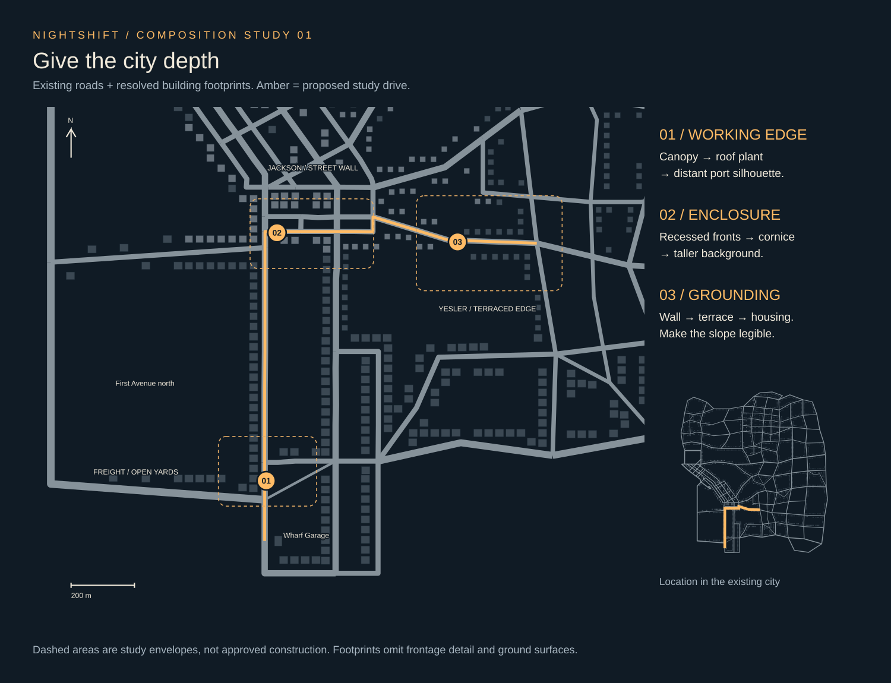
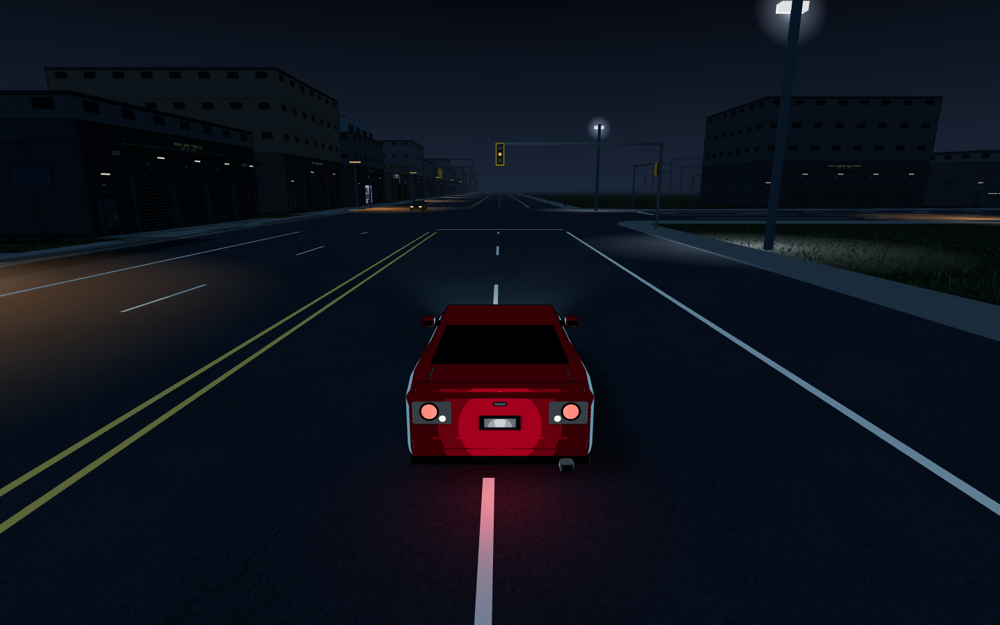
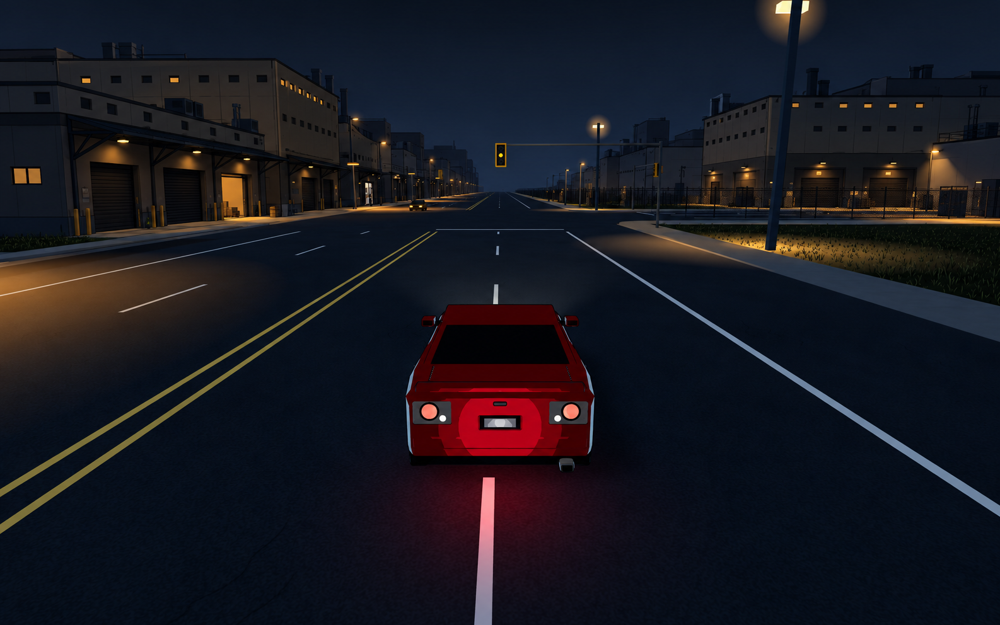
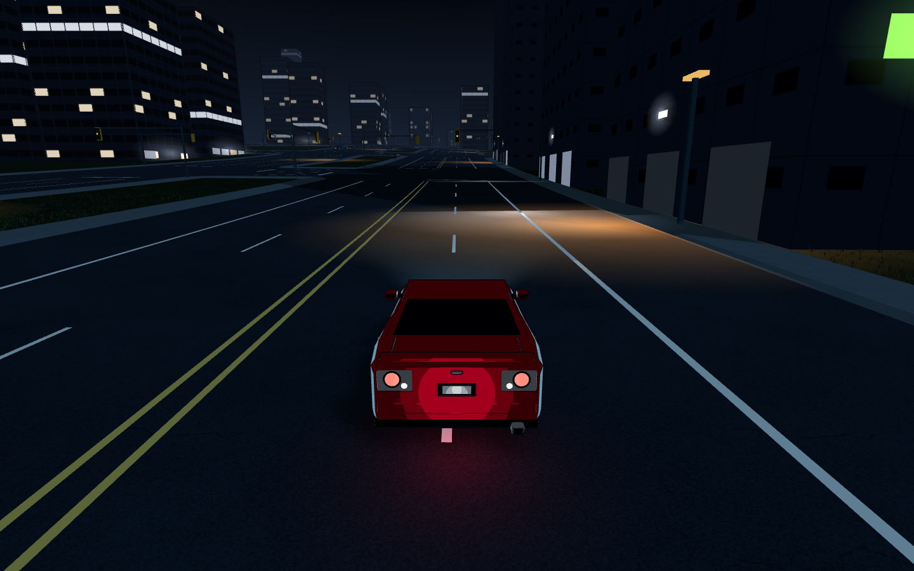
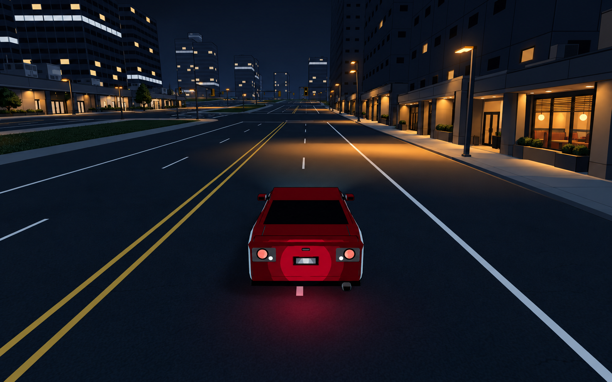
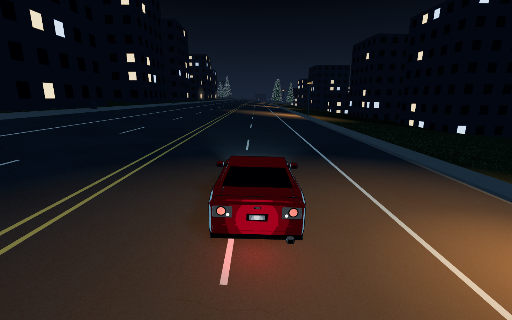
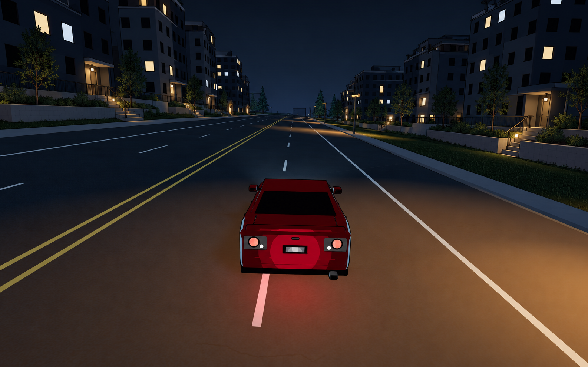

NIGHTSHIFT / Port Alder / Visual study 01
Give the city depth.
A connected drive from working freight frontage to a commercial street base and inhabited terraces. Existing road geometry anchors the study; architecture between the road and skyline supplies the character.
Proposed direction — not implemented. Left: actual staged game captures. Right: generated architectural concepts. Concepts are not exact geometry or lighting specifications.

320 roads · 1,725 resolved building footprints · North up · The inset locates this drive within the existing city.
01 / First Avenue → Holgate
The working edge
Canopies and recessed bays give the near street thickness. Roof plant supplies a second layer. A service-yard edge connects the right-hand building to its ground. Keep more bays dark than the concept suggests.

BASELINE · (-4, 720) · north · stationary capture
CONCEPT · architectural depth and concentrated occupationEXTRACT A KIT Bracketed canopy / recessed dock / roof plant. First proof: one frontage coordinated with Holgate Cold Store.
02 / Jackson eastbound
A street with a base
The towers already provide a background. Give their lower floors a coherent scale: structural piers, entrances set into shadow and shallow canopies. One open business gives the street a reason to be lit.

BASELINE · (30, -63) · east · stationary capture
CONCEPT · near frontage / street base / existing towersEXTRACT A KIT Entrance recess / storefront piers / canopy and corner return. Preserve the junction openings.
03 / Yesler East
Meet the ground
Plinths, short retaining edges and entrances explain how these buildings occupy the slope. Stairs must lead somewhere. This view is already on elevated ground; the proposal adds no new road climb.

BASELINE · (600, -34) · east · stationary capture
CONCEPT · grounded apartments / sparse occupied windowsEXTRACT A KIT Stepped plinth / interrupted retaining wall / porch. Survey the real slope and preserve open driving routes before placing solids.
Recommendation
Prove the freight frontage first.
One short, visible frontage. Compare architecture at equal exposure, drive past both ways, then extend the parts that read at speed. The overhead plan guides the sequence; the driver's view decides whether it works.
Concepts may drift in proportions and lighting. Roads, car and geometry must follow the actual baseline during implementation. No handling, world geometry, collision or runtime code changed for this study.